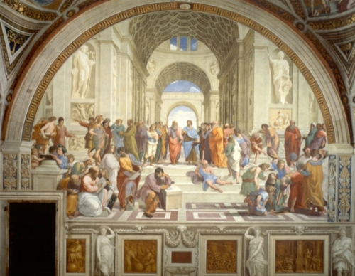
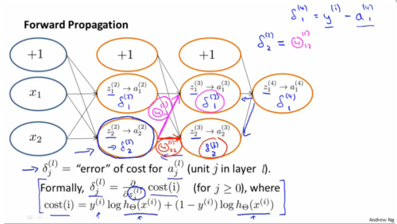
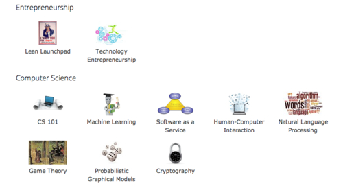

The new face of education
We are on the brink of one of the most radical paradigm shifts to affect human society in millennia. OK, maybe that that sounds obvious to a lot of people what with the explosion of innovation that the internet and other new technologies over the past decade or two. But I’m talking about a total revamping of an institution that has existed as long as language has existed- indeed, as long as we have existed: education.
Education has barely changed one iota in the last thousand years of its practice. Plato and Socrates taught their classes essentially the same way that a modern philosophy or science class is taught - hell, we still use the Socratic method in modern classes (this isn’t a claim that the method is ineffective, merely a demonstration of how long current practices have existed without drastic change). Dozens of students congregate where the one who has the knowledge is located, and this one knowledgable person teaches a concept to the students and answers questions. The only change in the late 1900s was that there were significantly more places where this happened - called colleges/universities.

But colleges/universities were designed in an ancient world. They were built to spread knowledge in an era of very few knowledgable people relative to the entire population, when the most efficient way - and indeed the *only*way - of conducting this transfer of knowledge was face-to-face. This is no longer the world that we live in. Courtesy of modern technology, we live in a globally connected world with accessible experts in any field you’d care to study, and I don’t think that modern institutions of higher learning will survive the shift. At least not in a state that anywhere near resembles the way they operate now.
If you want to get an idea of what the new face of eduction will be like, look to Stanford University, the bleeding edge of the move toward the new system.
This semester, two Stanford-level courses were made available for free to anyone with an internet connection: Introduction to Artificial Intelligence and Machine Learning. These courses were taught by some of the biggest names in the field. Andrew Ng and his team created the Machine Learning course, which is the one that I am currently enrolled in, so its the one I’ll talk about.
Over 65,000 students are enrolled (spoiler alert - its everywhere). Skimming the extensive “introductions” section of the class forum reveals that these students are incredibly diverse, from software engineer professionals working here in silicon valley to high school students in poor eastern European communities and absolutely everything in between.
Online courses in and of themselves are not particularly new- institutions such as MIT, Berkeley, Yale, and many other traditionally well known schools have been making lectures and course materials available online for years. The key difference is that this new wave of online courses are designed specifically and exclusively for the new global audience. This is immediately apparent in the presentation of the lectures, the format of the homework assignments, and the design of the curriculum. The result is a learning experience that I argue rivals that of any traditional college course.

The homework assignments for Ng’s class include quizzes that solidify the students intuition of the concept, combined with specific programming problem sets that gives the student a handle on concrete implementation of the ideas using Octave (a freeware version of MATLAB). As someone who has taken similar MATLAB courses at a well known private university, I can confidently attest to the relative efficacy of the new format.
There are differences of course. To clear up misunderstandings that I have, I used to go to a review session- usually led by a TA- who would try to answer the questions of dozens of students within a few hours. Now- I simply post a question to the class forum and have it answered *very*quickly by up to dozens of knowledgable practitioners- many of whom are already implementing similar programming techniques in their line of work.
Another significant difference is that instead of 200 different lecturers teaching the same topic to 65,000 learners, we have 1. This may strike some as a disadvantage- but in the future, this system will allow the best lecturers to float to the top. Think about how much more cost effective this is- if we replace 200 lecturers with 1, we are cutting the costs of education by a factor of hundreds, not to mention drastically expanding the number of students we can reach.
Note that in the above point I mention only *lecturers,*not *teachers.*What I believe we will see is a simultaneous centralization of certain aspects of education and decentralization of others. In an increasingly connected world, everyone becomes a teacher. Are you a computer programmer? You are also going to be a programming teacher. Are you a marketing analyst? Guess what, you are also going to be a teacher of marketing. In a way that seems contradictory at first- this consolidation of our currently bloated educational system will provide the infrastructure necessary to bring back peer-to-peer transfer of knowledge.
Stanford is expanding their open courses next semester, and my prediction is that it only gets bigger from here. Below is a list of the next classes to be offered (still trying to decide which ones I will have the time to participate in!). I highly recommend them to everyone who is at all interested.

The role of the university will have to change dramatically if and when such a system becomes the norm. One key role they will have to play lies in accreditation. (At least for now) students enrolled in these Education2.0 courses do so merely for the knowledge gained. There is no course credit gained which is a double edged sword. On the one hand, it means students are that much more collaborative. Cheating becomes a non-issue in such an environment. The key question becomes how to decide which students are qualified for a given job, etc. Instead of having accreditation agencies give the seal of approval to other institutions who then parcel out degrees, we might see a move toward tests or other processes to directly accreditate individuals.
I could continue to wildly speculate on the issue and I have lots more ideas about how things might pan out (future blog topics might include how Khan Academy is turning primary school education on its head, or how studio schools and apprenticeship systems are on the rise as well). If you disagree or would like to point out how any of these particular ideas are crazy, leave a comment! Please! All that I do know is that with tuition prices rising outrageously every year while wonderful free alternative options begin to proliferate, something’s gotta give.